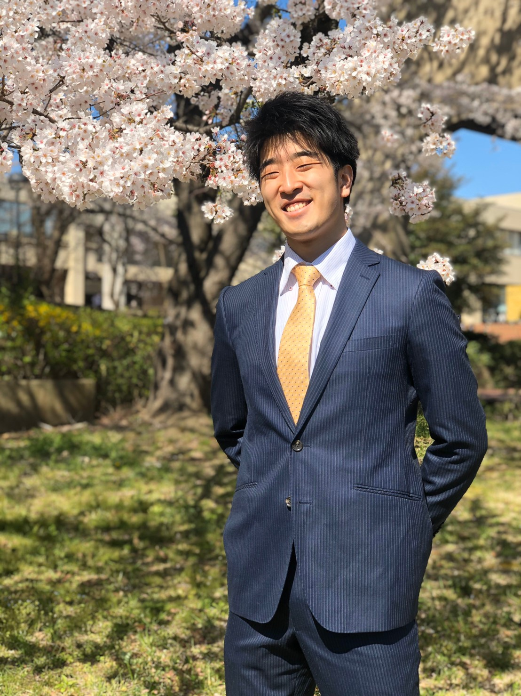

Affiliation
- Master's Program in Computer Science, Graduate School of Science and Technology Degree Programs in Systems and Information Engineering, University of Tsukuba
- IPLAB UBIQUITOUS Team
Society
- ACM student membership
Contact
Publication
Bachelor thesis
-
Yuta Takayama
Table Operation Using Hand Gesture for Spreadsheet
Biography
- [Apr. 2013 - Mar. 2016] Seryo High School
- [Apr. 2016 - Mar. 2020] College of Information Science, Science and Technology, School of Informatics, University of Tsukuba
- [Apr. 2020 - current] Master's Program in Computer Science, Graduate School of Science and Technology Degree Programs in Systems and Information Engineering Master's Program in Computer Science, University of Tsukuba.